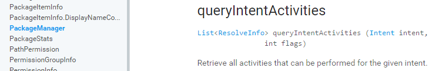
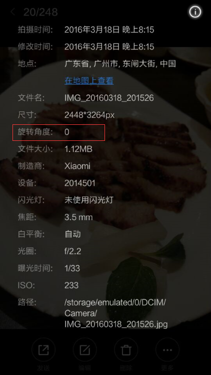
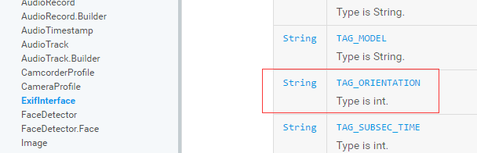
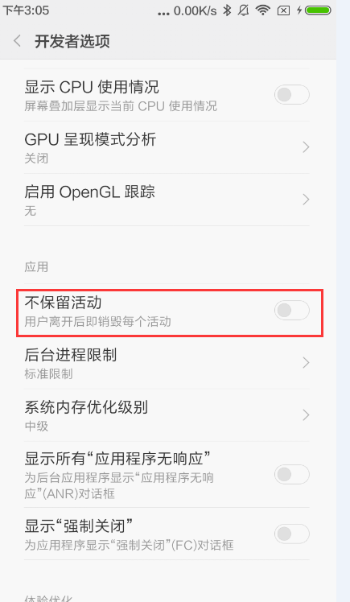
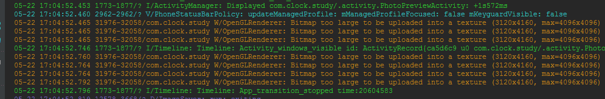
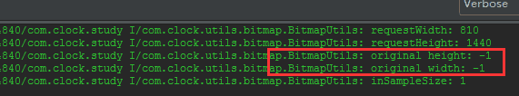
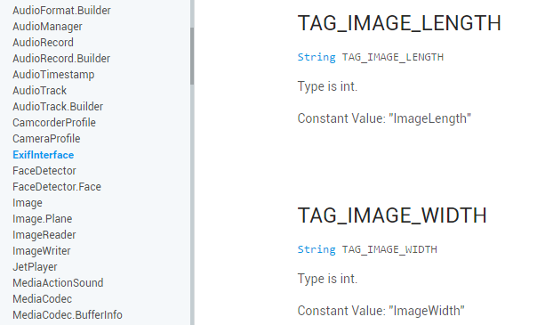
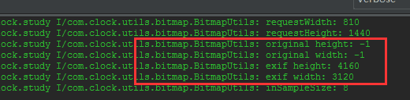
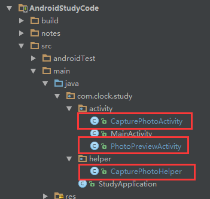

你需要知道的Android拍照适配方案
来源:http://www.jianshu.com/p/f269bcda335f#rd
近段时间，家里陪自己度过大学四年的电脑坏了，挑选好的新电脑配件终于在本周全部到货，自己动手完成组装。从AMD到i7的CPU，6G内存到14G内存，打开 AndroidStudio 的速度终于杠杆的上去了，感动到泪流满面啊！！！！！！！扯了这么多，回归一下正题，还是来说说本篇文章要写什么吧！说起调用系统相机来拍照的功能，大家肯定不陌生，现在所有应用都具备这个功能。例如最基本的，用户拍照上传头像。Android开发的孩纸都知道，碎片化给拍照这个功能的实现带来挺多头疼的问题。所以，我决定写写一些网上不多见但又经常听到童鞋们吐槽的问题。
拍照功能实现
Android 程序上实现拍照功能的方式分为两种：第一种是利用相机的 API 来自定义相机，第二种是利用 Intent 调用系统指定的相机拍照。下面讲的内容都是针对第二种实现方式的适配。
通常情况下，我们调用拍照的业务场景是如下面这样的：
- A 界面，点击按钮调用相机拍照；
- A 界面得到拍完照片，跳转到 B 界面进行预览；
- B 界面有个按钮，点击后触发某个业务流程来处理这张照片；
实现的大体流程代码如下：
//1、调用相机
File mPhotoFile = new File(folder,filename);
Intent captureIntent = new Intent(MediaStore.ACTION_IMAGE_CAPTURE);
Uri fileUri = Uri.fromFile(mPhotoFile);
captureIntent.putExtra(MediaStore.EXTRA_OUTPUT, fileUri);
mActivity.startActivityForResult(captureIntent, CAPTURE_PHOTO_REQUEST_CODE);
//2、拿到照片
@Override
protected void onActivityResult(int requestCode, int resultCode, Intent data) {
if (requestCode == CapturePhotoHelper.CAPTURE_PHOTO_REQUEST_CODE && resultCode == RESULT_OK) {
File photoFile = mCapturePhotoHelper.getPhoto();//获取拍完的照片
if (photoFile != null) {
PhotoPreviewActivity.preview(this, photoFile);//跳转到预览界面
}
finish();
} else {
super.onActivityResult(requestCode, resultCode, data);
}
}
//3、各种各样处理这张图片的业务代码
到这里基本科普完了如何调用系统相机拍照，相信这些网上一搜一大把的代码，很多童鞋都能看懂。
有没有相机可用？
前面讲到我们是调用系统指定的相机app来拍照，那么系统是否存在可以被我们调用的app呢？这个我们不敢确定，毕竟 Android 奇葩问题多，还真有遇到过这种极端的情况导致闪退的。虽然很极端，但作为客户端人员还是要进行处理，方式有二：
- 调用相机时，简单粗暴的 try-catch
- 调用相机前，检测系统有没有相机 app 可用
try-catch 这种粗暴的方式大家肯定很熟悉了，那么要如何检测系统有没有相机 app 可用呢？系统在PackageManager里为我们提供这样一个 API

通过这样一个 API ，可以知道系统是否存在 action 为 MediaStore.ACTION_IMAGE_CAPTURE 的 intent 可以唤起的拍照界面，具体实现代码如下：
/**
* 判断系统中是否存在可以启动的相机应用
*
* @return 存在返回true，不存在返回false
*/
public boolean hasCamera() {
PackageManager packageManager = mActivity.getPackageManager();
Intent intent = new Intent(MediaStore.ACTION_IMAGE_CAPTURE);
List<ResolveInfo> list = packageManager.queryIntentActivities(intent, PackageManager.MATCH_DEFAULT_ONLY);
return list.size() > 0;
}
拍出来的照片“歪了”！！！
经常会遇到一种情况，拍照时看到照片是正的，但是当我们的 app 获取到这张照片时，却发现旋转了 90 度（也有可能是180、270，不过90度比较多见，貌似都是由于手机传感器导致的）。很多童鞋对此感到很困扰，因为不是所有手机都会出现这种情况，就算会是出现这种情况的手机上，也并非每次必现。要怎么解决这个问题呢？从解决的思路上看，只要获取到照片旋转的角度，利用 Matrix 来进行角度纠正即可。那么问题来了，要怎么知道照片旋转的角度呢？细心的童鞋可能会发现，拍完一张照片去到相册点击属性查看，能看到下面这样一堆关于照片的属性数据

没错，这里面就有一个旋转角度，倘若拍照后保存的成像照片文件发生了角度旋转，这个图片的属性参数就能告诉我们到底旋转了多少度。只要获取到这个角度值，我们就能进行纠正的工作了。 Android 系统提供了 ExifInterface 类来满足获取图片各个属性的操作

通过 ExifInterface 类拿到 TAG_ORIENTATION 属性对应的值，即为我们想要得到旋转角度。再根据利用 Matrix 进行旋转纠正即可。实现代码大致如下：
/**
* 获取图片的旋转角度
*
* @param path 图片绝对路径
* @return 图片的旋转角度
*/
public static int getBitmapDegree(String path) {
int degree = 0;
try {
// 从指定路径下读取图片，并获取其EXIF信息
ExifInterface exifInterface = new ExifInterface(path);
// 获取图片的旋转信息
int orientation = exifInterface.getAttributeInt(ExifInterface.TAG_ORIENTATION, ExifInterface.ORIENTATION_NORMAL);
switch (orientation) {
case ExifInterface.ORIENTATION_ROTATE_90:
degree = 90;
break;
case ExifInterface.ORIENTATION_ROTATE_180:
degree = 180;
break;
case ExifInterface.ORIENTATION_ROTATE_270:
degree = 270;
break;
}
} catch (IOException e) {
e.printStackTrace();
}
return degree;
}
/**
* 将图片按照指定的角度进行旋转
*
* @param bitmap 需要旋转的图片
* @param degree 指定的旋转角度
* @return 旋转后的图片
*/
public static Bitmap rotateBitmapByDegree(Bitmap bitmap, int degree) {
// 根据旋转角度，生成旋转矩阵
Matrix matrix = new Matrix();
matrix.postRotate(degree);
// 将原始图片按照旋转矩阵进行旋转，并得到新的图片
Bitmap newBitmap = Bitmap.createBitmap(bitmap, 0, 0, bitmap.getWidth(), bitmap.getHeight(), matrix, true);
if (bitmap != null && !bitmap.isRecycled()) {
bitmap.recycle();
}
return newBitmap;
}
拍完照怎么闪退了？
曾在小米和魅族的某些机型上遇到过这样的问题，调用系统相机拍照，拍完点击确定回到自己的app里面却莫名奇妙的闪退了。这种闪退有两个特点：
- 没有什么错误日志（有些机子啥日志都没有，有些机子会出来个空异常错误日志）；
- 同个机子上非必现（有时候怎么拍都不闪退，有时候一拍就闪退）；
对待非必现问题往往比较头疼，当初遇到这样的问题也是非常不解。上网搜罗了一圈也没方案，后来留意到一个比较有意思信息：有些系统厂商的 ROM 会给自带相机应用做优化，当某个 app 通过 intent 进入相机拍照界面时，系统会把这个 app 当前最上层的 Activity 销毁回收。（注意：我遇到的情况是有时候很快就回收掉，有时候怎么等也不回收，没有什么必现规律）为了验证一下，便在启动相机的 Activity 中对 onDestory 方法进行加 log 。果不其然，终于发现进入拍照界面的时候 onDestory 方法被执行了。所以，前面提到的闪退基本可以推测是 Activity 被回收导致某些非UI控件的成员变量为空导致的。（有些机子会报出空异常错误日志，但是有些机子闪退了什么都不报，是不是觉得很奇葩！）
既然涉及到 Activity 被回收的问题，自然要想起 onSaveInstanceState 和 onRestoreInstanceState 这对方法。去到 onSaveInstanceState 把数据保存，并在 onRestoreInstanceState 方法中进行恢复即可。大体代码思路如下：
@Override
protected void onSaveInstanceState(Bundle outState) {
super.onSaveInstanceState(outState);
mRestorePhotoFile = mCapturePhotoHelper.getPhoto();
if (mRestorePhotoFile != null) {
outState.putSerializable(EXTRA_RESTORE_PHOTO, mRestorePhotoFile);
}
}
@Override
protected void onRestoreInstanceState(Bundle savedInstanceState) {
super.onRestoreInstanceState(savedInstanceState);
mRestorePhotoFile = (File) savedInstanceState.getSerializable(EXTRA_RESTORE_PHOTO);
mCapturePhotoHelper.setPhoto(mRestorePhotoFile);
}
对于 onSaveInstanceState 和 onRestoreInstanceState 方法的作用还不熟悉的童鞋，网上资料很多，可以自行搜索。
到这里，可能有童鞋要问，这种闪退并不能保证复现，我要怎么知道问题所在和是否修复了呢？我们可以去到开发者选项里开启不保留活动这一项进行调试验证

它作用是保留当前和用户接触的 Activity ，并将目前无法和用户交互 Activity 进行销毁回收。打开这个调试选项就可以满足验证的需求，当你的 app 的某个 Activity 跳转到拍照的 Activity 后，这个 Activity 立马就会被系统销毁回收，这样就可以很好的完全复现闪退的场景，帮助开发者确认问题有没有修复了。
涉及到 Activity 被销毁，还想提一下代码实现上的问题。假设当前有两个 Activity ，MainActivity 中有个 Button ，点击可以调用系统相机拍照并显示到 PreviewActivity 进行预览。有下面两种实现方案：
- 方案一：MainActivity 中点击 Button 后，启动系统相机拍照，并在 MainActivity 的 onActivityResult 方法中获取拍下来的照片，并启动跳转到 PreviewActivity 界面进行效果预览；
- 方案二：MainActivity 中点击 Button 后，启动 PreviewActivity 界面，在 PreviewActivity 的 onCreate（或者onStart、onResume）方法中启动系统相机拍照，然后在 PreviewActivity 的 onActivityResult 方法中获取拍下来的照片进行预览；
上面两种方案得到的实现效果是一模一样的，但是第二种方案却存在很大的问题。因为启动相机的代码放在 onCreate（或者onStart、onResume）中，当进入拍照界面后，PreviewActivity 随即被销毁，拍完照确认后回到 PreviewActivity 时，被销毁的 PreviewActivity 需要重建，又要走一遍 onCreate、onStart、onResume，又调用了启动相机拍照的代码，周而复始的进入了死循环状态。为了避免让你的用户抓狂，果断明智的选择方案一。
以上这种情况提到调用系统拍照时，Activity就回收的情况，在小米4S和小米4 LTE机子上（MIUI的版本是7.3，Android系统版本是6.0）出现的概率很高。 所以，建议看到此文的童鞋也可以去验证适配一下。
图片无法显示
图片无法显示这个问题也是略坑，如何坑法？往下看，同样是在小米4S和小米4 LTE机子上（MIUI的版本是7.3，Android系统版本是6.0）出现概率很高的场景（当然，不保证其他机子没出现过）。按照我们前面提到的业务场景，调用相机拍照完成后，我们的 app 会有一个预览图片的界面。但是在用了小米的机子进行拍照后，自己 app 的预览界面却怎么也无法显示出照片来，同样是相当郁闷，郁闷完后还是要一步一步去排查解决问题的！为此，需要一步一步猜测验证问题所在。
猜测一：没有拿到照片路径，所以无法显示？
直接断点打 log 跟踪，猜测一很快被推翻，路径是有的。猜测二：Bitmap太大了，无法显示？
直接在 AS 的 log 控制台仔细的观察了一下系统 log ，发现了一些蛛丝马迹

OpenGLRenderer: Bitmap too large to be uploaded into a texture
每次拍完照片，都会出现上面这样的 log ，果然，因为图片太大而导致在 ImageView 上无法显示。到这里有童鞋要吐槽了，没对图片的采样率 inSampleSize 做处理？天地良心啊，绝对做处理了，直接看代码：
/**
* 压缩Bitmap的大小
*
* @param imagePath 图片文件路径
* @param requestWidth 压缩到想要的宽度
* @param requestHeight 压缩到想要的高度
* @return
*/
public static Bitmap decodeBitmapFromFile(String imagePath, int requestWidth, int requestHeight) {
if (!TextUtils.isEmpty(imagePath)) {
if (requestWidth <= 0 || requestHeight <= 0) {
Bitmap bitmap = BitmapFactory.decodeFile(imagePath);
return bitmap;
}
BitmapFactory.Options options = new BitmapFactory.Options();
options.inJustDecodeBounds = true;//不加载图片到内存，仅获得图片宽高
BitmapFactory.decodeFile(imagePath, options);
options.inSampleSize = calculateInSampleSize(options, requestWidth, requestHeight); //计算获取新的采样率
options.inJustDecodeBounds = false;
return BitmapFactory.decodeFile(imagePath, options);
} else {
return null;
}
}
public static int calculateInSampleSize(BitmapFactory.Options options, int reqWidth, int reqHeight) {
final int height = options.outHeight;
final int width = options.outWidth;
int inSampleSize = 1;
Log.i(TAG, "height: " + height);
Log.i(TAG, "width: " + width);
if (height > reqHeight || width > reqWidth) {
final int halfHeight = height / 2;
final int halfWidth = width / 2;
while ((halfHeight / inSampleSize) > reqHeight && (halfWidth / inSampleSize) > reqWidth) {
inSampleSize *= 2;
}
long totalPixels = width * height / inSampleSize;
final long totalReqPixelsCap = reqWidth * reqHeight * 2;
while (totalPixels > totalReqPixelsCap) {
inSampleSize *= 2;
totalPixels /= 2;
}
}
return inSampleSize;
}
瞄了代码后，是不是觉得没有问题了？没错，inSampleSize 确确实实经过处理，那为什么图片还是太大而显示不出来呢？ requestWidth、int requestHeight 设置得太大导致 inSampleSize 太小了？不可能啊，我都试着把长宽都设置成 100 了还是没法显示！干脆，直接打印 inSampleSize 值，一打印，inSampleSize 值居然为 1 。 我去，彻底打脸了，明明说好的处理过了，居然还是 1 ！！！！为了一探究竟，干脆加 log 。
public static Bitmap decodeBitmapFromFile(String imagePath, int requestWidth, int requestHeight) {
if (!TextUtils.isEmpty(imagePath)) {
Log.i(TAG, "requestWidth: " + requestWidth);
Log.i(TAG, "requestHeight: " + requestHeight);
if (requestWidth <= 0 || requestHeight <= 0) {
Bitmap bitmap = BitmapFactory.decodeFile(imagePath);
return bitmap;
}
BitmapFactory.Options options = new BitmapFactory.Options();
options.inJustDecodeBounds = true;//不加载图片到内存，仅获得图片宽高
BitmapFactory.decodeFile(imagePath, options);
Log.i(TAG, "original height: " + options.outHeight);
Log.i(TAG, "original width: " + options.outWidth);
options.inSampleSize = calculateInSampleSize(options, requestWidth, requestHeight); //计算获取新的采样率
Log.i(TAG, "inSampleSize: " + options.inSampleSize);
options.inJustDecodeBounds = false;
return BitmapFactory.decodeFile(imagePath, options);
} else {
return null;
}
}
运行打印出来的日志如下：

图片原来的宽高居然都是 -1 ，真是奇葩了！难怪，inSampleSize 经过处理之后结果还是 1 。狠狠的吐槽了之后，总是要回来解决问题的。那么，图片的宽高信息都丢失了，我去哪里找啊？ 像下面这样？
public static Bitmap decodeBitmapFromFile(String imagePath,
int requestWidth, int requestHeight) {
...
BitmapFactory.Options options = new BitmapFactory.Options();
options.inJustDecodeBounds = true;//不加载图片到内存，仅获得图片宽高
Bitmap bitmap = BitmapFactory.decodeFile(imagePath, options);
bitmap.getWidth();
bitmap.getHeight();
...
} else {
return null;
}
}
no，此方案行不通，inJustDecodeBounds = true 时，BitmapFactory 获得 Bitmap 对象是 null；那要怎样才能获图片的宽高呢？前面提到的 ExifInterface 再次帮了我们大忙，通过它的下面两个属性即可拿到图片真正的宽高

顺手吐槽一下，为什么高不是 TAG_IMAGE_HEIGHT 而是 TAG_IMAGE_LENGTH。改良过后的代码实现如下：
public static Bitmap decodeBitmapFromFile(String imagePath,
int requestWidth, int requestHeight) {
if (!TextUtils.isEmpty(imagePath)) {
Log.i(TAG, "requestWidth: " + requestWidth);
Log.i(TAG, "requestHeight: " + requestHeight);
if (requestWidth <= 0 || requestHeight <= 0) {
Bitmap bitmap = BitmapFactory.decodeFile(imagePath);
return bitmap;
}
BitmapFactory.Options options = new BitmapFactory.Options();
options.inJustDecodeBounds = true;//不加载图片到内存，仅获得图片宽高
BitmapFactory.decodeFile(imagePath, options);
Log.i(TAG, "original height: " + options.outHeight);
Log.i(TAG, "original width: " + options.outWidth);
if (options.outHeight == -1 || options.outWidth == -1) {
try {
ExifInterface exifInterface = new ExifInterface(imagePath);
int height = exifInterface.getAttributeInt(
ExifInterface.TAG_IMAGE_LENGTH,
ExifInterface.ORIENTATION_NORMAL);//获取图片的高度
int width = exifInterface.getAttributeInt(
ExifInterface.TAG_IMAGE_WIDTH,
ExifInterface.ORIENTATION_NORMAL);//获取图片的宽度
Log.i(TAG, "exif height: " + height);
Log.i(TAG, "exif width: " + width);
options.outWidth = width;
options.outHeight = height;
} catch (IOException e) {
e.printStackTrace();
}
}
options.inSampleSize = calculateInSampleSize(options,
requestWidth, requestHeight); //计算获取新的采样率
Log.i(TAG, "inSampleSize: " + options.inSampleSize);
options.inJustDecodeBounds = false;
return BitmapFactory.decodeFile(imagePath, options);
} else {
return null;
}
}
再看一下，打印出来的log

这样就可以解决问题啦。
总结
以上总结了这么些身边童鞋经常问起，但网上又不多见的适配问题，希望可以帮到一些开发童鞋少走弯路。文中多次提到小米的机子，并不代表只有MIUI上有这样的问题存在，仅仅只是因为我身边带的几部机子大都是小米的。对待适配问题，在搜索引擎都无法提供多少有效的信息时，我们只能靠断点、打log、观察控制台的日志、以及API文档来寻找一些蛛丝马迹作为突破口，相信办法总比困难多。
以上的示例代码已经整理到：https://github.com/D-clock/AndroidStudyCode ，主要的代码在下面红圈部分

打个广告
最近 diycode 社区 上，越来越多开发小伙伴活跃在上面。看着有意思的提问，有意思的回答，我的感触还是蛮大的，曾经渴望过有这样一个优雅问答的技术社区存在，目前在一点点的实现！希望能够它能够越做越好！喜欢开发的小伙伴也可以一起上来 http://diycode.cc/ 探讨交流！